A relation R is said to be a partial order relation if it must possess the following three properties:
• Reflexive.
• Ant symmetric.
• Transitive.
A partial order is said to be a total or linear order if and
only if for all 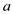 and
 in
the set either 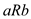or 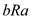 is
true.
in
the set either 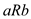or 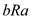 is
true.
Now, suppose that the relation is defined as “is as good or better”. Then the above three properties can be defined as:
• Reflexive: This is a bit trivial, but from the assumption taken everybody is as good or better as themselves.
• Ant symmetric: According to this, if is better
than then it’s
never possible that will be
better than.
• Transitive: According to this, if is better
than and
is
better than 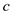then, it is
obvious that is better
than.
Therefore, from the above definition, the relation follows a partial order. Here, it is assumed that the comparison will be take place between any two candidates. Then the comparison must be a total relation.
Therefore, the total order on the ranks of the candidate is determined.
Implementation of procedure Random ( a , b ) :
/* method to generate 0 or 1 randomly */
Random01
return rand() % 2
End Random01
/* find the least power of 2 which is greater than or equal to the given input a */
LeastPowerOfTwo(a)
power = 0
temp = a
while temp greater than 1
temp = temp/2
power = power + 1
return power
End LeastPowerOfTwo
/* generate a random number between 0 to a (exclusive) */
Generate(a)
run = LeastPowerOfTwo(a)
while true
power = 1
sum = 0
for i=0 to run
sum = sum + Random01() * power
power *= 2
if sum < a
return sum
End Generate
/* generate a random nubmer between a (inclusive) and b (exclusive)*/
Random(a,b)
Return a + generate(b-a)
End Random
The question is similar to flip coins. Each time we flip a coin, we have the same probability to get either 0 or 1. If we flip the coin for several times, the probability of getting each permutation of 0 and 1 is the same. So, if we can use each permutation to represent a distinct number between a and b, we shall get the desired Random function.
Binary format can be used to represent a number with a series of 0 and 1s. So, if we run the Random (0, 1) for 1+lg (b-a) times and convert the final permutation to a decimal value plus a, that's the value we want. And we need to be careful since b-a might not be exact power of 2, so we need to run Random (0, 1) for ceiling of 1+lg(b-a) times. But a serial of 0 and 1 of this length might represent a number exceeds b-a, we can abandon the value and restart Random (a, b) till the number is smaller than b-a.
(OR)
Consider the following implementation of the procedure 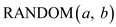 which only makes call to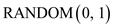.
Algorithm:
Suppose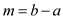.
Step 1: First find the smallest k, in such a way that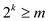, where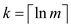.
Step 2: Call the procedure, ,  times to get
a -digit
binary number 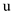.
times to get
a -digit
binary number 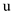.
Step 3: if 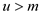then go to step 2 otherwise returns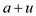.
Running Time Analysis:
The above algorithm produces uniformly random number in that range. From the above algorithm, it may be a possibility to repeat the step 2.
• The chance having not to repeat the step 2 is given by 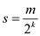.
• Consider the geometric distribution, which suggest it will take 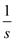trials before user get such numbers. In other words, it will take 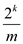trials.
As, the procedure on each
trial is called times, then
the expected running time is as follows:
 , then user
will get;
, then user
will get;
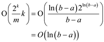
Hence, the expected running time of the given procedure is given as 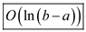 .
Algorithm to give unbiased answer
A procedure BIASED–RANDOM is available, that outputs either 0 or 1.
The probability of the output 1 is p.
The probability of the output 0 is 1 – p.
where 0 < p < 1
The algorithm UNBIASED–RANDOM that returns an unbiased answer is given as follows:
UNBIASED–RANDOM
1 do
2 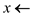 BIASED–RANDOM //first call to get a value
3 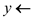 BIASED–RANDOM //second call to get a value
4 while 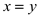 //loop till both the values are equal
5 return x //return x the value when
The algorithm UNBIASED–RANDOM returns an unbiased answer by using the procedure BIASED–RANDOM as a subroutine. To get unbiased answer, the algorithm calls the procedure BIASED–RANDOM twice and stores the values returned by the procedure in two variables x and y. In the conditional expression of the do-while loop, it compares x and y. If the values are equal the loop repeats, otherwise its breaks the loop and returns the first value stored in x.
The probability of the outputs (0 or 1) by the algorithm UNBIASED–RANDOM can be calculated as follows:
The probability of the output 0 is 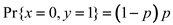.
The probability of the output 1 is 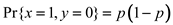.
Observe that 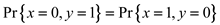. Hence the probabilities of both the outputs are equal.
Since the probability of returning the output 0 is equal to the probability of returning the output1 and there is no other way, UNBIASED–RANDOM will return 0 and 1 each with probability 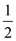 .
Running time of the algorithm UNBIASED–RANDOM:
Consider, each iteration takes O(1) time.
The expected running time of the algorithm UNBIASED–RANDOM in the expected number of iterations is linear.
The do-while loop iterates till the two values are not equal which can be considered as a Bernoulk trial. In the trail “success” means the algorithm returns a value. The algorithm will return 0 or 1.
The probability of the success is equal to the sum of probabilities of the outputs 0 and 1.
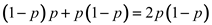.
Geometric distribution gives the number of trials until a success occurs.
The expected number of trials for this scenario is given by 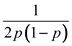.
Therefore, the expected running time of the algorithm UNBIASED-RANDOM as a function of p is 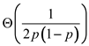.